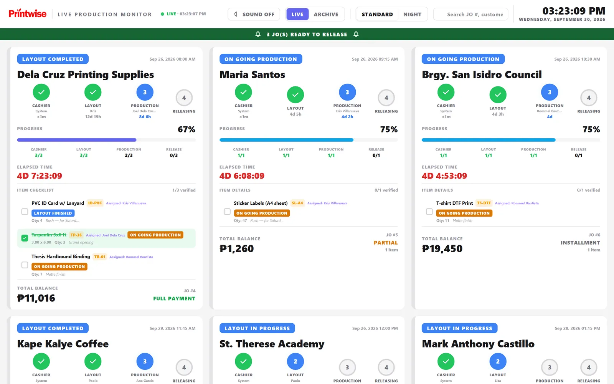

PrintWise — shop operations & HRIS
A print and computer shop was running everything — job orders, payments, payroll, time records — through one CodeIgniter 3 controller with 393 methods. I'm rebuilding it as a Filament admin on Laravel 13, module by module, with an import command that moves the old data table by table so both can run side by side.
- Job order → production queue, with a queue display board and a public page where customers track their own orders.
- Batch payroll with SSS, PhilHealth, Pag-IBIG and withholding tables, run per employee inside DB transactions.
- RFID time-clock kiosk, receipt number ranges, statements of account, customer loyalty tiers.
- Per-feature permission registry with presets and an audit log; an in-app assistant that can look up payments and reprint job orders.
